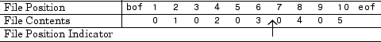
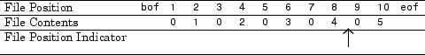
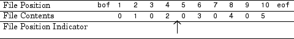

Import Binary Data with Low-Level I/O
Low-Level Functions for Importing Data
Low-level file I/O functions allow the most direct control over reading or writing data to a file. However, these functions require that you specify more detailed information about your file than the easier-to-use high-level functions. For a complete list of high-level functions and the file formats they support, see Supported File Formats for Import and Export.
If the high-level functions cannot import your data, use one of the following:
fscanf, which reads formatted data in a text or ASCII file; that is, a file you can view in a text editor. For more information, see Reading Data in a Formatted Pattern.fgetlandfgets, which read one line of a file at a time, where a newline character separates each line. For more information, see Reading Data Line-by-Line.fread, which reads a stream of data at the byte or bit level. For more information, see Reading Binary Data in a File.
Note
The low-level file I/O functions are based on functions in the ANSI® Standard C Library. However, MATLAB® includes vectorized versions of the functions, to read and write data in an array with minimal control loops.
Reading Binary Data in a File
As with any of the low-level I/O functions, before importing, open the file with
fopen, and obtain a file
identifier. When you finish processing a file, close it with fclose(.fileID)
By default, fread reads a file 1 byte at a time, and
interprets each byte as an 8-bit unsigned integer (uint8).
fread creates a column vector, with one element for each
byte in the file. The values in the column vector are of class
double.
For example, consider the file nine.bin, created as
follows:
fid = fopen('nine.bin','w');
fwrite(fid, [1:9]);
fclose(fid);To read all data in the file into a 9-by-1 column vector of class
double:
fid = fopen('nine.bin');
col9 = fread(fid);
fclose(fid);Changing the Dimensions of the Array
By default, fread reads all values in the file into a
column vector. However, you can specify the number of values to read, or
describe a two-dimensional output matrix.
For example, to read nine.bin, described in the previous
example:
fid = fopen('nine.bin');
% Read only the first six values
col6 = fread(fid, 6);
% Return to the beginning of the file
frewind(fid);
% Read first four values into a 2-by-2 matrix
frewind(fid);
two_dim4 = fread(fid, [2, 2]);
% Read into a matrix with 3 rows and
% unspecified number of columns
frewind(fid);
two_dim9 = fread(fid, [3, inf]);
% Close the file
fclose(fid);Describing the Input Values
If the values in your file are not 8-bit unsigned integers, specify the size of the values.
For example, consider the file fpoint.bin, created with
double-precision values as follows:
myvals = [pi, 42, 1/3];
fid = fopen('fpoint.bin','w');
fwrite(fid, myvals, 'double');
fclose(fid);To read the file:
fid = fopen('fpoint.bin');
% read, and transpose so samevals = myvals
samevals = fread(fid, 'double')';
fclose(fid);For a complete list of precision descriptions, see the fread function reference
page.
Saving Memory
By default, fread creates an array of class
double. Storing double-precision values in an array
requires more memory than storing characters, integers, or single-precision
values.
To reduce the amount of memory required to store your data, specify the class of the array using one of the following methods:
Match the class of the input values with an asterisk (
'*'). For example, to read single-precision values into an array of classsingle, use the command:mydata = fread(fid,'*single')
Map the input values to a new class with the
'=>'symbol. For example, to readuint8values into anuint16array, use the command:mydata = fread(fid,'uint8=>uint16')
For a complete list of precision descriptions, see the fread function reference
page.
Reading Portions of a File
MATLAB low-level functions include several options for reading portions of binary data in a file:
Read a specified number of values at a time, as described in Changing the Dimensions of the Array. Consider combining this method with Testing for End of File.
Move to a specific location in a file to begin reading. For more information, see Moving within a File.
Skip a certain number of bytes or bits after each element read. For an example, see Write and Read Complex Numbers.
Testing for End of File
When you open a file, MATLAB creates a pointer to indicate the current position within the file.
Note
Opening an empty file does not move the file position
indicator to the end of the file. Read operations, and the
fseek and frewind functions, move
the file position indicator.
Use the feof function to check whether you have reached
the end of a file. feof returns a value of
1 when the file pointer is at the end of the file.
Otherwise, it returns 0.
For example, read a large file in parts:
filename = 'largedata.dat'; % hypothetical file
segsize = 10000;
fid = fopen(filename);
while ~feof(fid)
currData = fread(fid, segsize);
if ~isempty(currData)
disp('Current Data:');
disp(currData);
end
end
fclose(fid);Moving within a File
To read or write selected portions of data, move the file position indicator
to any location in the file. For example, call fseek with the syntax
fseek(fid,offset,origin);
where:
Alternatively, to move easily to the beginning of a file:
frewind(fid);
Use ftell to find the current
position within a given file. ftell returns the number of
bytes from the beginning of the file.
For example, create a file five.bin:
A = 1:5;
fid = fopen('five.bin','w');
fwrite(fid, A,'short');
fclose(fid);Because the call to fwrite specifies the
short format, each element of A uses
two storage bytes in five.bin.
Reopen five.bin for reading:
fid = fopen('five.bin','r');Move the file position indicator forward 6 bytes from the beginning of the file:
status = fseek(fid,6,'bof');

Read the next element:
four = fread(fid,1,'short');
The act of reading advances the file position indicator. To determine the
current file position indicator, call ftell:
position = ftell(fid)
position =
8 
To move the file position indicator back 4 bytes, call
fseek again:
status = fseek(fid,-4,'cof');

Read the next value:
three = fread(fid,1,'short');
Reading Files Created on Other Systems
Different operating systems store information differently at the byte or bit level:
Big-endian systems store bytes starting with the largest address in memory (that is, they start with the big end).
Little-endian systems store bytes starting with the smallest address (the little end).
Windows® systems use little-endian byte ordering, and UNIX® systems use big-endian byte ordering.
To read a file created on an opposite-endian system, specify the byte ordering used to create the file. You can specify the ordering in the call to open the file, or in the call to read the file.
For example, consider a file with double-precision values named
little.bin, created on a little-endian system. To read this
file on a big-endian system, use one (or both) of the following commands:
Open the file with
fid = fopen('little.bin', 'r', 'l')Read the file with
mydata = fread(fid, 'double', 'l')
where 'l' indicates little-endian ordering.
If you are not sure which byte ordering your system uses, call the computer function:
[cinfo, maxsize, ordering] = computer
ordering is 'L' for
little-endian systems, or 'B' for big-endian systems.